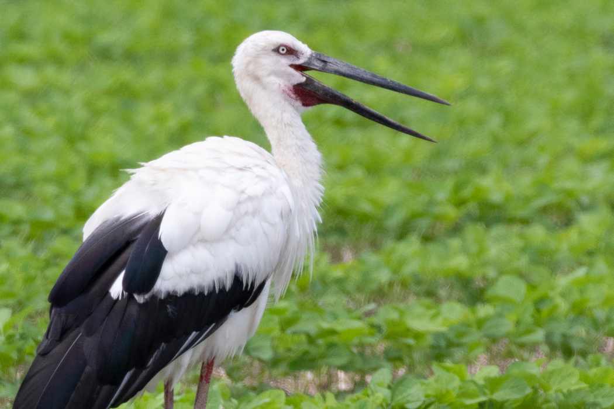

コウノトリ
コウノトリ（鸛、Ciconia boyciana）は、鳥綱コウノトリ目コウノトリ科コウノトリ属に分類される鳥類。

分布
日本、韓国、中国、朝鮮民主主義人民共和国、ロシア南東部
模式標本の産地は横浜市。中華人民共和国北東部・ロシア南東部のアムール川・ウスリー川流域で繁殖し、冬季になると大韓民国、日本、台湾、香港、長江中流域へ南下して越冬する。1980年代以降は中華人民共和国での越冬地が西へ移行している傾向があり、主に昌江で越冬する。2000年代以降は中華人民共和国での越冬地でも繁殖が確認されている。日本では冬季にまれに飛来する（冬鳥）。まとまった群れとしては1993年11月に11羽が与那国島に飛来し – 翌1994年3月まで留まった観察例がある。日本で繁殖・周年生息する個体群は絶滅した。
分布域は東アジアに限られる。また、総数も推定2,000～3,000羽と少なく、絶滅の危機にある。中国東北部地域やアムール・ウスリー地方で繁殖し、中国南部で越冬する。渡りの途中に少数が日本を通過することもある。
形態
全長110 – 115センチメートル。翼長58 – 67センチメートル。翼開長195センチメートル。体重3-5キログラム。全身の羽色は白いが、風切羽・大雨覆は黒。0～1歳の幼鳥のみ、中雨覆の一部が黒。翼を閉じていると隠れて見えないが、尾羽は全て白。
オスとメスの区別は外見だけでは判断しにくいのが特徴で、DNA鑑定などで初めて判明する。そのため足などにコウノトリに無害な有色のプラスチックをつけるなどして個体を区別する。
嘴長オス26.1 – 27.3センチメートル。嘴は黒く、基部は赤い。眼の周囲は皮膚が赤く裸出する。後肢は赤い。他の大多数の鳥類と異なり、爪は鉤爪ではなく少し尖った平爪（扁爪）である。
生態
河川・池沼・湿原などに生息し、日本では里山に囲まれた水田や河川のある里地に生息していた。大陸部では9月中旬から10月中旬に渡りを始め、越冬地に10月中旬から12月に飛来し翌3月上旬まで留まる。日本の繁殖個体群は渡りは確認されていなかったが、冬季は個体数が減少する傾向があった。同種間で激しく争うこともあり、中華人民共和国での報告例（2羽で争って1羽が頭部を嘴で突かれ死亡）や、日本では2002年に兵庫県豊岡市に飛来して2007年に死亡するまで留まっていた野生オス（通称ハチゴロウ）の死因として、検死から病気や重金属・汚染物質などが死因ではないこと、2006 – 2007年に主に野生オスが再導入オスを攻撃した目撃例が計36回あること、最後の争いの目撃例で再導入オスが野生オスを撃退したところが目撃されたことから、再導入されたオスとの縄張り争いによる死亡が示唆されている。 成鳥になると鳴かなくなる。代わりに「クラッタリング」と呼ばれる行為が見受けられる。嘴を叩き合わせるように激しく開閉して音を出す行動で、威嚇、求愛、挨拶、満足、なわばり宣言等の意味がある。
食性は肉食性が強く、魚類、カエル類、ヘビ類、鳥類の卵や雛、齧歯類、昆虫などを食べる。水生動物は浅瀬で、ヘビ・鳥類の卵や雛・ネズミや昆虫などは乾燥した草地で捕食する。主にザリガニなどの甲殻類やカエル、魚類を捕食する。ネズミなどの小型哺乳類を捕食することもある。
繁殖様式は卵生。3歳頃から繁殖を始める。頭部を反らせ嘴を叩き合わせて（クラッタリング）求愛する。婚姻様式は固い絆の一夫一妻。コウノトリの場合、産卵したつがいのことをペアと呼び、まだ産卵に至っていないつがいのことをカップルと定義している。放鳥が始まった2005年以降、2019年現在まで雛を巣立たせたペアが死別以外でペア解消した例は無い。ペア相手を慎重に吟味するため、雌雄が同行しているだけではペア・カップルとは限らない。ツルのようにダンスを踊ったり、翼を広げて求愛したりということはない。
湿原に面した大木の樹上に巣を作る。巣は木の枝を組み合わせて作る。他の鳥類に比べたら縄張り意識が強い特徴がある。日本の繁殖個体群は過去には3月下旬から4月上旬に繁殖していて、大陸個体群は4月中旬から4月下旬に繁殖する。2 – 6個の卵を産む。抱卵期間は31 – 35日。造巣・抱卵・育雛は雌雄共同で行う。抱卵時、パートナーに餌を運んでくることはない。育雛期間は55 – 70日で、6羽全てが巣立つこともある。雛は孵化してから63 – 74日は巣に留まる。雛が生まれると親鳥は巣の中に餌を吐き戻して与え、雛は吐き出された餌を自力で食べる。口移しで餌を与えたり、雛の口に入れてやったりすることはない。
雛は、約58-71日で巣立ちする。日本では過去には6月下旬から7月上旬に巣立ち、大陸個体群は7月下旬から8月上旬に巣立つ。巣立ち後しばらくは親鳥について餌の採り方・飛び方などを学ぶが、秋頃には親離れし、ひとり立ちまたは幼鳥・若鳥のゆるい群れを作って行動する。親子で渡りをすることはほとんど無い。
人間との関係
野火・伐採による営巣木の減少、ダム建設・干拓・排水・乱獲による獲物の減少、農薬・原油・重金属などによる水質汚染、道路建設や電線の設置・人間の撹乱によって生息数は減少している。大韓民国では1971年に最後のオスが密猟されたことで、繁殖個体群は絶滅した。1975年のワシントン条約発効時からワシントン条約附属書Iに掲載されている。1999年の生息数は約3,000羽と報告されている。2005年における長江での個体数は1,194羽と報告されている。
日本
明治時代以前は樹上にとまったり営巣したりしないタンチョウと混同され、「松上の鶴」など絵画のモチーフになっていたとされる。日本国内では鶴とつく地名があるが、実際は冬鳥として飛来するタンチョウなどのツル科の構成種ではなく本種と混同されていたと考えられている。松の樹上に巣を作る本種（ツル科はアフリカに分布するカンムリヅルを除き樹上にとまらない）は瑞鳥としてツル類と混同され、絵画や装飾のモチーフとして昭和初期まで用いられていた。
日本では元々は広域に分布していた。19世紀には江戸市中でも繁殖していた記録がある。古文書から葛西の樹上・青山や蔵前の寺院の屋根で営巣していたとする記録がある。Carl Hagenbeckも駿府城の樹上や、横浜市で飛来していたのを目撃したと記録している。明治時代に乱獲により激減し、日本での繁殖個体群は兵庫県但馬地区と福井県若狭地区の個体群を除いて絶滅した。但馬地区（豊岡市周辺）では出石藩であった頃に藩主により本種が霊鳥として保護されていたことから保護意識があり、絶滅を免れたとされている。1908年には禁猟とされ、1921年には生息地が天然記念物に指定された。1930年の但馬地区での生息数は最大で約100羽と推定されている。第二次世界大戦中に営巣地であった松林が松根油を採取するために伐採されたことや、食糧増産のための水田を荒らす害鳥として駆除されたことにより豊岡市周辺でも生息数が激減した。
太平洋戦争前後の食料不足の中で食用にされたこともあり、1956年には20羽にまで減少してしまった。ちなみにこのコウノトリの減少の原因には化学農薬の使用や減反政策がよく取り上げられるが、日本で農薬の使用が一般的に行われるようになったのは1950年代以降、減反政策は1970年代以降の出来事であるため時間的にはどちらも主因と断定しにくく、複合的な原因により生活環境が失われたと考えられる。
第二次世界大戦以降は水銀系農薬による獲物の減少や繁殖力の低下（1960年代に変死例・繁殖の失敗が増加したこと、捕獲後に死亡した個体から大量の水銀が検出されたため）、近親交配により生息数が減少した。1953年に種として天然記念物、1956年に特別天然記念物に指定された。
1961年5月25日頃の福井県小浜市羽賀で2羽が巣立ち、これが野生絶滅前最後の巣立ちとなった。1962年に文化財保護法に基づき兵庫県と福井県が「特別天然記念物コウノトリ管理団体」の指定を受けた。1964年5月には福井県小浜市栗田で2羽の雛が孵化したが、この雛は2羽とも5月17日に死亡が確認された。
1965年から野生個体の捕獲と、飼育下で繁殖させる試みが進められるようになった。捕獲された個体は短期間で死亡する個体が多く、闘争による死亡やケージなどの問題、前述した大量の水銀が体内から検出されたことが影響していると考えられている。1971年に豊岡市で野生個体を捕獲したことで、日本産の個体群は野生絶滅した（この個体は捕獲後1か月で死亡している）。1966年に初めて神戸市立王子動物園が、以後は1972年に多摩動物公園、1978年に大阪市天王寺動物園などで、中華人民共和国産の個体を導入して繁殖させる試みが進められた。
国内の野生最後の生息地の一つである福井県武生市に1970年12月2日に飛来した雌の一羽（コウちゃん）は、嘴を損傷しており、満足に餌を採ることができない状態で衰弱が激しかった為に保護され、1971年2月28日に豊岡市のコウノトリ飼育場に移送された。「武生」と改名されたその一羽は2005年6月20日まで生き、34年という国内最長飼育記録を建てると共に、115個の卵を産んだが、成長したのは雌の「紫」一羽のみだった。
多摩動物公園では、中国から譲り受けて人工飼育を続けていた結果、1988年4月5日に国内初の人工繁殖に成功した。
豊岡市のコウノトリ飼育場（後に保護増殖センター）でも、極東ロシアのハバロフスクから譲渡されたペアが1989年に飼育下繁殖に成功した。
大阪市天王寺動物園、豊橋総合動植物公園でも繁殖が成功し、国内飼育数を増やしている。兵庫県では繁殖成功後の1992年4月22日には野生復帰計画が開始される。その後、コウノトリ飼育場では、近親交配を避けるため、何度か動物園やロシアからコウノトリをもらい受け、2002年5月5日には生育したものとあわせて飼育100羽を達成した。
1999年に本種の再導入を目的として兵庫県立コウノトリの郷公園が開園した。
2005年現在では豊岡市のコウノトリの郷公園周辺地域にコウノトリの生息可能な環境が整備されつつあり、周辺の農家も農薬の散布を控え、無農薬栽培に切り替える等の協力をしている。そして、2005年9月24日には世界初の放鳥（餌をとるなどの訓練をつんだ8羽の中から選ばれた、2-7歳の雄2羽と雌3羽の計5羽）が行われ、34年ぶりにコウノトリが大空に羽ばたくこととなった。この放鳥式典には山階鳥類研究所総裁等を務める秋篠宮文仁親王・紀子妃も参加し、約3500人もの参加者とともに見送った。放鳥にあたっては、飼育生活が長いので餌を求めるためか、2羽が30分程で戻ってきてしまうというハプニングも見受けられた。2005年12月24日には放鳥記念碑の除幕式が行われた。その後2006年4月14日には自然放鳥したコウノトリの産卵が確認され、続けて18日にも2卵目が発見された。しかし、これらの卵は孵化しなかった。翌2007年も放鳥個体による産卵が行われ、1つのペアから1羽が孵化した。この雛は2007年7月31日に無事に巣立った。日本の野外におけるコウノトリの孵化としては、1964年の福井県小浜市の雛2羽以来43年ぶり、巣立ちとしては、1961年の福井県小浜市の雛2羽以来46年ぶりのことであった。
放鳥したコウノトリは背中に発信機をつけているため、数年は人工衛星から行動範囲を監視できるが、コウノトリの郷公園やボランティアにより放鳥個体の追跡調査も行われている。
日本では激減・絶滅の原因となった乱獲・営巣木の伐採・毒性の強い農薬の使用など禁止・規制されたものもあるが、湿原・池沼・ため池の干拓、排水、河川改修、谷津田や薪炭林などの放棄、圃場整備による乾田化・水路のコンクリート化や農薬などにより生息地や獲物が減少しているといった問題がある。餌が不足しているからといって、「コウノトリのために」との思いで給餌する行為を認めることはできない。餌付けは保護ではなく、環境整備によって餌を増やすのが原則であり、給餌により一部のコウノトリが生きていけたとしても、それはいずれ限界を迎え、コウノトリ個体群にとって悪影響こそあれ、良いことは無いと考えられている。安易な餌付けのための外来種・国内移入種の放流やそれによる生態系の破壊、意図しない病原体の導入、個体集中による伝染病蔓延からの大量死、人馴れしたコウノトリによる交通事故が危惧されている。
2012年は再導入された個体数は約60羽に達し、2009年以降は大陸から飛来し周年生息するようになった個体と繁殖させる試みも進められている。
2013年12月、コウノトリの保全を全国的に進めていくにあたっての課題を共有し、連携して課題の解決にあたることを目的に、兵庫県立コウノトリの郷公園、東京都多摩動物公園、（公社）日本動物園水族園協会 生物多様性委員会が中心となり、コウノトリの保全に取り組む機関や施設に参加を呼びかけ、『コウノトリの個体群管理に関する機関・施設間パネル（Inter-institutional Panel on Population Management of the Oriental White Stork 略称：IPPM-OWS）』が設立された。オブザーバーとして関連する国の省庁が参加している。
こうのとりの里（千葉県野田市）では、2015年以降、施設内で誕生したコウノトリを8年連続で放鳥しており、2022年5月8日にも雄「はく」を放鳥した。野生で生存する野田市生まれのコウノトリは11羽を数えている。
2018年、再導入された個体の内、飼育個体が100羽、野外生息個体が144羽の計244羽となり、2021年は飼育個体が94羽、野外生息個体が217羽の計311羽、2022年は飼育個体が182羽、屋外個体数が309羽に増えた。
伝承
兵庫県豊岡市下宮に鎮座する久久比神社には、コウノトリ伝説が残されている。
岡山県倉敷市児島の琴浦地区に鎮座する鴻八幡宮には、八幡宮の名前の由来となったコウノトリ伝説が残っている。
埼玉県鴻巣市に鎮座する鴻神社には、神社の名前由来となったコウノトリ伝説が残っている。
七つの外湯めぐりで形成される城崎温泉には、七つの外湯の一つに、本種が傷を癒していた事により発見したと伝説が伝わる「鴻の湯」がある。
ヨーロッパでは、「赤ん坊はコウノトリの嘴で運ばれてくる」「コウノトリが住み着いた家には幸福が訪れる」という言い伝えがあるが、本種ではなく、シュバシコウ（Ciconia ciconia）である（ヨーロッパに本種は生息しない）。